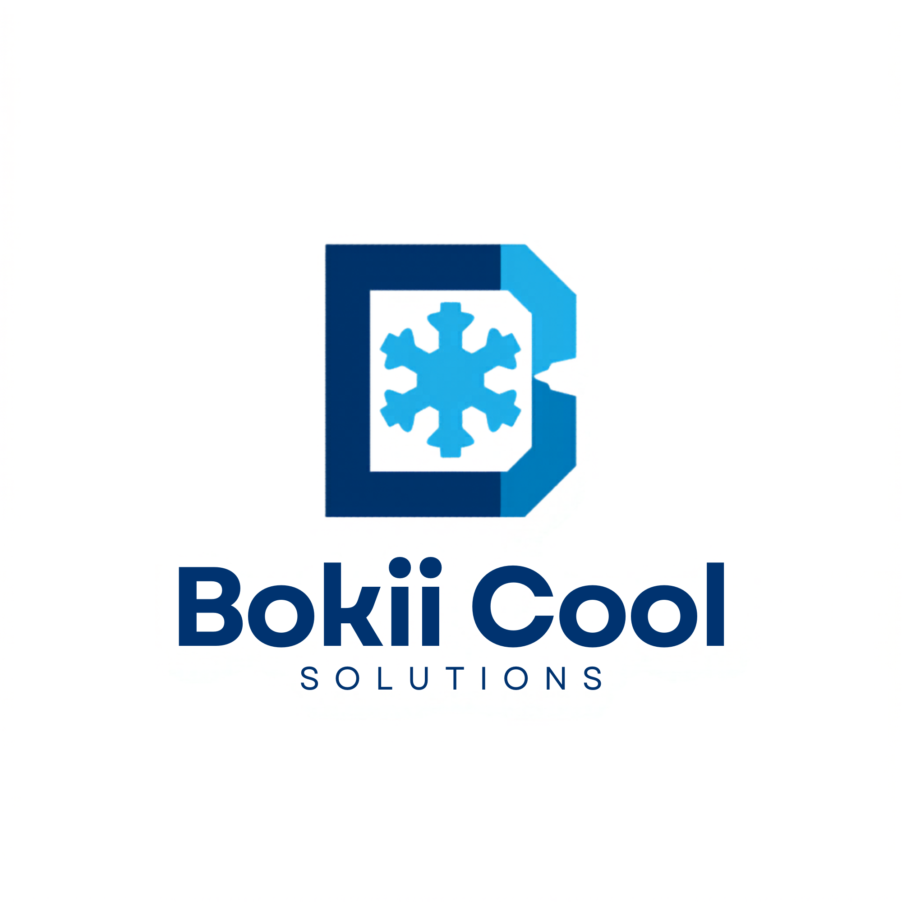

Fridge Repair
Diagnosis and repair support for domestic fridges, chest freezers and commercial refrigeration units that are no longer cooling properly.

Bokii Cool Solutions Mobile Fridge, Aircon & Refrigeration Repair WhatsApp NowFast Mobile Cooling Support
Bokii Cool Solutions helps homes, shops, restaurants and mobile unit owners keep cooling equipment running with practical diagnostics, repairs, regassing and trailer-based service support.
Trusted brand direction
Real field repair positioning
Ready for trailer signage
WhatsApp and call-driven layout
Services
Every section of the site reinforces what customers need to know quickly: what you repair, how you work, and why they can trust you on-site.
Diagnosis and repair support for domestic fridges, chest freezers and commercial refrigeration units that are no longer cooling properly.
Repair and servicing for air conditioning systems with a practical, on-site approach focused on getting equipment back to working condition.
Troubleshooting for cooling performance issues, electrical faults and refrigeration problems that need proper diagnosis before replacement.
System checks and regassing support for units that need restored cooling power and more reliable performance.
Support for mobile fridge trailers and other transportable cooling systems used for events, business operations and field service needs.
Repair-focused support for display fridges, cooler equipment and refrigeration systems used by shops, bars and food businesses.
Field Work
The original photos show real repairs, mobile trailer units, refrigeration tools and commercial jobs. Until those image files are wired in, the page uses strong proof-of-work cards based on those real examples.
Domestic Cooling
Built for customers needing help when a household freezer, fridge or cooling unit stops performing properly.
Commercial Cooling
Strong fit for shops and beverage coolers where reliable refrigeration is directly tied to daily business.
Mobile Units
Shows that Bokii Cool Solutions is not limited to fixed locations and can work on field-ready systems.
Fault Finding
The brand story stays grounded in technical work, practical problem solving and on-site repair confidence.
How It Works
Customers reach out with a cooling issue and get a fast response around the type of unit and the problem.
The issue is inspected properly so repairs are based on real fault finding rather than guesswork.
Repairs, regassing and performance checks are done with a focus on getting the unit back into reliable service.
The message stays practical: restore function, reduce downtime and keep homes or businesses operating.
Why Bokii
Mobile on-site service with a strong local-service feel
Brand message centered on trust, response and practical workmanship
Layout structured for future logo export, real job photos and lead generation
Contact
Call or WhatsApp Bokii Cool Solutions for fridge, aircon and refrigeration repair support.